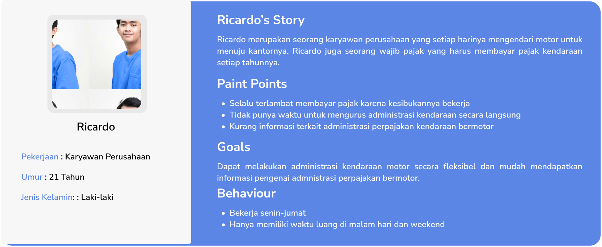
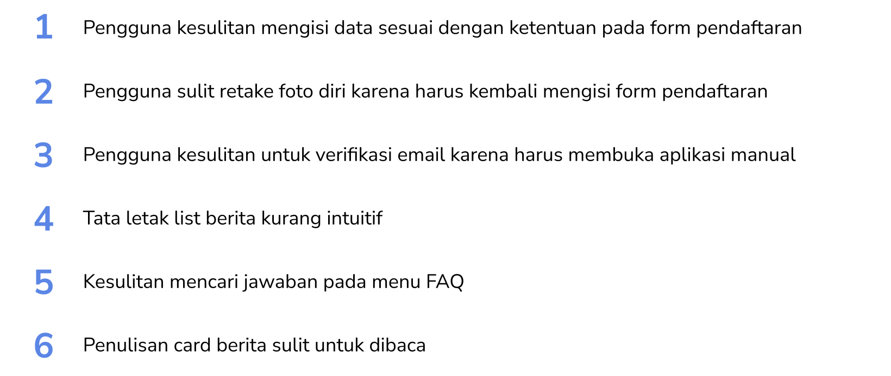

SIGNAL : Redesign Korlantas Digital APP (UI/UX Case Study)
Project Overview
SIGNAL adalah samsat digital nasional yang memudahkan masyarakat membayar pajak kendaraan secara aman dan mudah. Aplikasi ini memungkinkan pembayaran tanpa harus ke kantor pajak, meningkatkan efisiensi dan transparansi administrasi kendaraan bermotor. Dengan teknologi digital, SIGNAL mempercepat proses pembayaran, mengurangi kemacetan dan waktu antrian.
Untuk memudahkan dibutuhkan alur yang efisien, penyajian informasi yang mudah dipahami, dan kekonsistenan tampilanbr
Oleh karena itu pada proyek kali ini saya akan mendesain ulang aplikasi SIGNAL untuk meningkatkan pengalaman pengguna.
Project Flow
Project ini memiliki alur menggunakan konsep Design Thinking alur project dimulai dengan mengumpulkan masalah yang di hadapi pengguna hingga melalukan validasi mengggunakan metode usability testing.
berikut adalah breakdown alur project kali ini.
1. Emphatize
Emphatize dilakukan untuk memahami permasalahan yang dihadapi pengguna dalam menggunakan aplikasi ini. Pada tahap ini partisipan diminta untuk mencoba aplikasi SIGNAL dan menyampaikan pendapat dan masalahnya saat mencoba aplikasi ini. Berikut adalah Fact & Insight yang saya temui untuk menemukan Room for Improvement
Fact & Insight
- “Saat mengisi form placeholder kurang membantu dalam mengisi data yang benar”
- “Saat mendaftar akun saat klik tombol ambil foto wajah ulang malah ke halaman form lagi”
- “Saat verifikasi email harus membuka aplikasi email dahulu tidak ada call to action membuka aplikasi email langsung”
- “Pada card berita tata letak kurang tepat, terlalu banyak whitespace”
- “Saya mencari jawaban pertanyaan pada FAQ namun harus scroll terlebih dahulu”
- “Saya ingin melihat peraturan yang berlaku, namun list peraturan sulit dibaca”
2. Define
Untuk memahami lebih mengenai kebutuhan user, dibuat suatu representasi pengguna yang menggunakan aplikasi SIGNAL ini sehingga dapat memberikan solusi sesuai masalah dan perilaku pengguna. Representasi persona tersebut dinamakan User Persona berikut user persona yang saya buat
User Persona
Berikutnya setelah mengumpulkan data mengenai masalah dan perilaku pengguna adalah mengorganisir data dalam bentuk Affinity Diagram
Affinity Diagram
Berdasarkan affinity diagram tersebut, maka dapat dijabarkan 6 Problem Statement :
Problem Statements
Untuk mencari solusi atas Problem Statement. Saya menggunakan How Might We untuk memetakan ide solusi.
HMW (How Might We)
3. Ideate
Pada proses ideate solusi mulai dirancang dalam bentuk rangkaian kerangka. Disini saya membuat kerangka design awal yaitu Low Fidelity Design dalam bentuk Wireframe
Wireframe
4. Prototype
Design System
Hi-Fi Design
5. Validate
Maze Testing
Untuk melakukan validasi hasil Redesign aplikasi SIGNAL, saya melakukan usability testing. Usability Testing dilakukan 3 partisipaan yang sama pada fase emphatize. Partisipan diminta untuk melakukan task pada prototype via Maze dengan daftar task sebagai berikut
- Daftar Akun
- Lihat Daftar Berita
- Lihat Daftar FAQ
- Lihat Daftar Peraturan
Setelah melalukan testing via maze didapatkan skor maze sebagai berikut
Tester Feedback
Setelah partisipan mengerjakan task pada maze, partisipan diminta untuk memberikan feedback terkait hasil sebelum dan sesudah redesign. Berikut adalah feedback yang didapatkan dari partisipan.
- "Tampilan berita lebih enak dilihat"
- "Alur verifikasi email lebih cepat tanpa harus membuka email secara manual"
- "Lebih mudah mencari pertanyaan pada FAQ"
Kesimpulan
Aplikasi digital korlantas merupakan aplikasi yang mempermudah pengguna layanan administrasi kendaraan bermotor. Namun, ada beberapa masalah yang dihadapi pengguna. Oleh karena itu, dibutuhkan redesign untuk meningkatkan pengalaman pengguna.
Setelah melakukan redesign, dilakukan usability testing. Berdasarkan hasil testing didapatkan SKOR maze 85 yang termasukan dalam kateri High (Tinggi) dan mendapatkan feedback positif dari partisipan